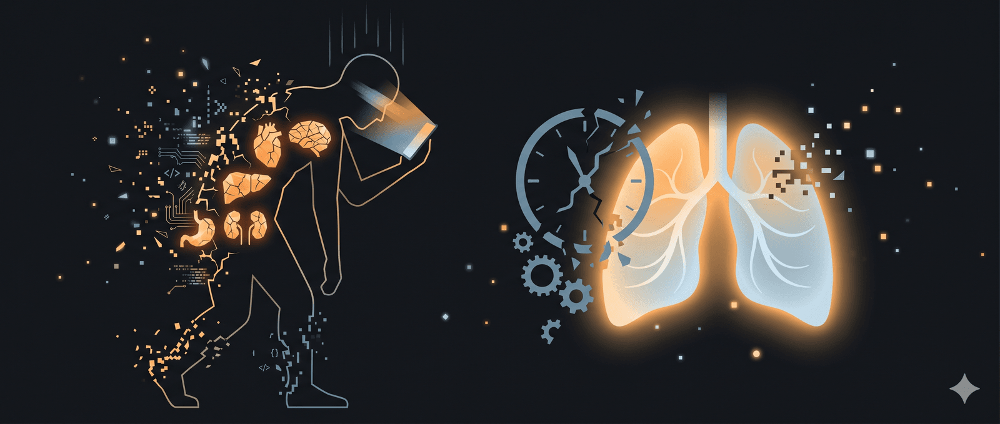

NHỮNG VẾT THƯƠNG THẦM KÍN CỦA THỜI HIỆN ĐẠIMột góc nhìn từ Ngũ Lao Thất Thương và hơi thở khí công
“Bạn có thấy mình lúc nào cũng mệt mỏi dù chẳng làm gì nặng nhọc?
Sáng ngủ dậy đã thấy uể oải, tối lên giường thì đầu óc vẫn quay cuồng.
Đôi mắt khô rát sau ngày dài dán vào màn hình, lưng đau ê ẩm dù chẳng khiêng vác gì.
Bạn cố gắng sống lành mạnh, ăn đủ chất, tập thể dục, thế mà cơ thể cứ như chiếc áo quá chật.”
Hãy ngồi xuống. Đặt tay lên bụng dưới. Thở ba hơi thật chậm.
Để tôi kể bạn nghe một câu chuyện cũ mà mới – chuyện về những tổn thương mà thời đại công nghệ đã lén khâu vào da thịt và tâm hồn ta.
Trong mười năm làm công việc trị liệu tâm lý, tôi đã ngồi hàng nghìn giờ với những con người kiệt sức, những đôi mắt vô hồn, những nụ cười gượng gạo. Và suốt ngần ấy năm, tôi cũng miệt mài tập luyện khí công – thứ nghệ thuật dạy con người lắng nghe cơ thể bằng hơi thở. Dần dà, tôi nhận ra một điều giản dị đến nao lòng: những sai lầm thời hiện đại chẳng qua là sự quên mất cách làm người. Và cái khung lý thuyết hai nghìn năm tuổi mang tên Ngũ Lao Thất Thương trong y học cổ truyền chính là tấm bản đồ chỉ lối về.
Năm cái bẫy của cơ thể theo Ngũ Lao
PHẦN 1 – Năm cái bẫy của cơ thể: Từ Ngũ Lao đến “bệnh văn phòng”
1. Cửu thị – Nhìn màn hình mười hai tiếng mỗi ngày
Bạn có biết rằng trung bình một người văn phòng dành chín giờ trước màn hình, cộng thêm hai giờ lướt điện thoại trước khi ngủ? Đôi mắt bạn không phải cửa sổ tâm hồn nữa – nó là ổ khô đỏ, nhức nhối, chảy nước mắt sống.
Về mặt tâm lý, đó là cái bẫy dopamine từ mạng xã hội, nỗi sợ bỏ lỡ (FOMO) khiến bạn không thể rời mắt dù đã mỏi. Về mặt Đông y, nó có tên gọi rất xưa: “Cửu thị thương huyết” – nhìn lâu hại huyết. Huyết ở đây là huyết Can. Can khai khiếu ra mắt, nhìn lâu làm hao tổn âm huyết của Can, khiến Can hỏa bốc lên. Hậu quả: mắt khô, hoa mắt, chóng mặt, tính khí nóng nảy, ngủ không sâu.
Lời từ hơi thở khí công: Mỗi giờ, hãy làm một việc nhỏ: nhắm mắt, xoa hai lòng bàn tay thật nhanh đến khi nóng ran, rồi áp nhẹ lên mắt. Đếm chín hơi thở – chín là số của Can trong hành Mộc. Để đôi mắt được nghỉ, để Can được tha thứ. Và nhớ: Không có email hay like nào quan trọng bằng sự trong trẻo của ánh nhìn mai này nhìn thấy bình minh.
2. Cửu tọa – Ngồi mười tiếng một chỗ
Ngồi lâu đã trở thành tư thế bình thường mới của loài người. Chúng ta ngồi khi làm việc, khi ăn, khi giải trí. Và rồi tự hỏi sao bụng to, chân yếu, tâm trạng u uất.
Tâm lý học gọi đó là “hội chứng lười vận động” – cơ thể không tiết đủ serotonin và endorphin, não rơi vào trạng thái trì trệ buồn chán. Đông y gọi đó là “Cửu tọa thương nhục” – ngồi lâu hại thịt. “Thịt” ở đây là cơ bắp, do Tỳ chủ quản. Tỳ vận hóa thủy cốc, nếu ngồi lâu, khí Tỳ uất trệ, đồ ăn không được chuyển hóa thành năng lượng mà biến thành đờm thấp. Bạn thấy mệt, ăn không ngon, phân nát, béo bụng, người nặng nề như bông thấm nước.
Lời từ hơi thở khí công: Thức thứ hai của Bát Đoạn Cẩn có tên “Lưỡng thủ thác thiên lý tam tiêu” – hai tay chống trời, lý tam tiêu. Hãy đứng dậy, ngay bây giờ, đan hai tay lên đỉnh đầu, lật lòng bàn tay hướng lên trời như đang nâng một đám mây. Hít vào, kéo căng toàn thân. Thở ra, hạ tay xuống. Làm tám lần. Tám là số của Tỳ trong hành Thổ. Động tác này đánh thức tỳ khí dậy từ cơn ngủ mê mệt.
3. Cửu ngọa – Nằm dài xem phim, lướt điện thoại trên giường
Buổi tối, thay vì ngủ, bạn nằm co ro xem ba tập phim, lướt TikTok đến hai giờ sáng. Sáng ra mệt rã rời, thở không ra hơi. Đó không phải thiếu ngủ đơn thuần – đó là “Cửu ngọa thương khí”: nằm lâu hại khí.
Phế chủ khí, chủ bì mao. Nằm lâu làm phế khí uất trệ, không tuyên phát được. Bạn dễ cảm lạnh, ho hen, da xám xịt, và cái cảm giác “thở không hết hơi” rất dễ bị nhầm với trầm cảm. Thực ra phổi đang kêu cứu.
Lời từ hơi thở khí công: Phổi là lá phong của cơ thể. Mỗi sáng, ra chỗ có nắng, đứng thẳng, hai tay chống hông. Hít một hơi thật sâu bằng bụng, rồi thở ra phát ra âm “TỪ” – kéo dài thật lâu. Đó là lục tự quyết dành cho Phế. Âm “Từ” giúp phế khí giáng xuống, đẩy hết uất trệ. Làm bảy lần. Sau đó, bạn sẽ thấy lồng ngực nhẹ như vừa cởi bỏ chiếc áo giáp.
4. Cửu lập – Đứng nhiều nơi công sở, lại mang giày cao gót
Đây là nỗi khổ riêng của giáo viên, nhân viên bán hàng, y tá… Đứng lâu trên nền cứng, cột sống chịu áp lực khủng khiếp, lưng dưới đau nhức, đầu gối yếu dần. Đông y bảo: “Cửu lập thương cốt” – đứng lâu hại xương. Thận chủ xương, sinh tủy. Đứng lâu làm hao tổn thận tinh, thận khí suy. Biểu hiện: đau lưng, ù tai, rụng tóc, hay quên, sợ lạnh.
Lời từ hơi thở khí công: Không phải cứ đứng là hại – hại là vì bạn đứng sai. Học cách đứng như thế nào? Hạ trọng tâm xuống, đầu gối hơi khuỵu, bàn chân bám chặt đất, cảm nhận huyệt Dũng Tuyền (lõm lòng bàn chân) như một cái rễ cắm xuống lòng đất. Tư thế này gọi là “Trạm trang” – đứng trụ. Mỗi lần đứng lâu, hãy thỉnh thoảng nhấc gót chân lên hạ xuống, như giậm nhẹ, để thận khí được rung động. Và nhớ: Đất luôn nâng bạn – chỉ cần bạn chịu buông lỏng.
5. Cửu hành – Chạy theo deadline, di chuyển liên tục, không lúc nào yên
Trái ngược với ngồi lâu, có những người “chân không chạm đất” – lúc nào cũng chạy, cũng đi, cũng di chuyển. Họ đi bộ hàng chục nghìn bước mỗi ngày, nhưng chẳng bao giờ thấy khỏe – trái lại, gân cốt nhức mỏi, dễ bị chuột rút, chân tay run rẩy. Đông y gọi đó là “Cửu hành thương cân” – đi lâu hại gân. Can chủ cân, đi nhiều quá làm hao tổn huyết Can, gân mất dinh dưỡng, trở nên co rút hoặc lỏng lẻo.
Lời từ hơi thở khí công: Đi bộ không phải là di chuyển – đi bộ là thiền. Hãy tập “kinh hành” – đi thiền. Mỗi bước chân đặt xuống, bạn thầm nói: “Con về nhà”. Mỗi bước nhấc lên: “Con được tự do”. Chậm như rùa bò, mắt nhìn xuống đất cách ba thước, hơi thở theo nhịp bước. Chỉ cần mười phút đi thiền mỗi tối, bạn sẽ thấy những bước chân vô thức trước kia đã làm bạn mệt mỏi thế nào. Không phải đi nhiều là tốt – mà là đi có ý thức.
Bảy cú sốc cảm xúc từ Thất Thương
PHẦN 2 – Bảy cú sốc của tâm hồn: Thất Thương trong xã hội áp lực
Bảy tổn thương sau đây không đến từ tư thế sai hay vận động quá độ, mà đến từ cảm xúc, suy nghĩ và cách sống – những thứ mà thời đại công nghệ đã làm cho méo mó.
6. Đại nộ – Cơn giận thầm lặng (thương Can)
Bạn có bao giờ giận đến mức đau nửa đầu, mặt đỏ bừng, tay run lên? Đó là một cơn giận bộc phát. Nhưng nguy hiểm hơn là cơn giận thầm lặng: bực mình vì kẹt xe, ấm ức với sếp, ghen tức trên mạng xã hội. Nó âm ỉ, không bùng nổ nhưng làm khí Can uất kết, lâu ngày hóa hỏa. “Đại nộ thương can” – giận dữ làm tổn thương Can. Hậu quả: đau đầu vùng thái dương, tăng huyết áp, rối loạn kinh nguyệt, mất ngủ do hỏa vượng.
Lời từ hơi thở khí công: Khi cơn giận dâng lên, đừng nói, đừng nhắn tin. Hãy đi bộ quanh phòng, tay nắm hờ, miệng phát âm “HỆ” – thật nhẹ, thật dài. “HỆ” là âm của Can trong lục tự quyết. Âm này giúp giải tỏa uất khí, đưa hỏa Can từ từ thoát ra ngoài qua hơi thở. Làm chín lần. Sau đó, xoa hai bên sườn từ trên xuống dưới – kinh Can chạy qua đó. Sự nguôi ngoai không đến từ lý lẽ, mà từ việc để hơi thở làm dịu những con sóng ngầm.
7. Đại bão – Ăn uống theo cảm xúc (thương Tỳ)
Stress đến, bạn tìm đến tủ lạnh. Đêm khuya, bạn gọi một phần gà rán, một ly trà sữa. Ăn xong thấy hối hận, nhưng ngay lúc đó thì thấy nhẹ người – vì dopamine tăng. Nhưng cái giá phải trả là “Đại bão thương tỳ” – ăn quá no làm tổn thương Tỳ. Tỳ vận hóa kém, đồ ăn ứ đọng thành đờm thấp. Bạn mệt mỏi, ăn không ngon miệng, nhưng lại béo – một nghịch lý rất thường gặp.
Lời từ hơi thở khí công: Trước khi ăn, hãy đặt tay lên rốn, thở ba hơi. Thì thầm: “Bình an, con sẽ nhai chậm”. Khi ăn, nhai mỗi miếng 30 lần – đó chính là khí công của cái miệng. Sau bữa ăn, xoa bụng theo chiều kim đồng hồ 36 vòng. Tỳ vui nhất khi được tôn trọng nhịp điệu tự nhiên. Đừng biến bữa ăn thành liệu pháp chống stress – hãy để stress được xử lý bằng thiền, bằng đi bộ, bằng nước mắt nếu cần.
8. Ưu tư – Lo âu về tương lai, suy nghĩ quá nhiều (thương Tâm)
Lo âu là căn bệnh của thời đại. Bạn lo cho công việc, lo cho con cái, lo cho sức khỏe, lo cho biến đổi khí hậu. Đầu óc bạn như cái máy xay không có nút tắt. Đông y gọi đó là “Ưu tư thương tâm” – lo nghĩ nhiều làm tổn thương Tâm. Tâm chủ thần minh, chủ huyết mạch. Lo nghĩ kéo dài làm hao tâm huyết, hao tâm khí. Kết quả: hồi hộp, đánh trống ngực, mất ngủ, hay quên, tinh thần bất an.
Lời từ hơi thở khí công: Tim không chỉ bơm máu – tim chứa “Thần” (tâm linh). Khi lo âu, hãy đặt tay phải lên ngực trái, tay trái lên trên, thở nhẹ như ru em bé. Mỗi lần thở ra, tưởng tượng những sợi chỉ lo âu từ trong lồng ngực được kéo ra ngoài. Mỗi lần thở vào, tưởng tượng một ánh sáng ấm áp len lỏi vào từng buồng tim. Làm ít nhất 12 hơi thở – con số của Tâm (hỏa). Sau đó, bạn sẽ thấy quả tim như được đặt vào một chiếc tổ êm.
9. Đại khủng – Sợ hãi mất việc, sợ thất bại, sợ bị đánh giá (thương Thận)
Sợ hãi là cảm xúc cổ xưa nhất. Nhưng ngày nay nó mang những hình hài mới: sợ bị đào thải, sợ không đạt chỉ tiêu, sợ nói trước đám đông, sợ không được yêu thương. Nỗi sợ kéo dài sẽ phá hủy Thận – theo Đông y là “Đại khủng thương thận”. Thận chủ sợ hãi (khủng), khi thận khí yếu, bạn càng dễ sợ hãi – một vòng luẩn quẩn. Triệu chứng: tiểu đêm nhiều, lưng đau lạnh, chân tay lạnh, dễ giật mình, sợ hãi vô cớ.
Lời từ hơi thở khí công: Ngồi xếp bằng hoặc trên ghế, thẳng lưng. Ấn nhẹ huyệt Hội Âm (giữa hậu môn và bộ phận sinh dục) bằng một đầu ngón tay (nếu kín đáo) hoặc chỉ co cơ sàn chậu. Tưởng tượng một cây cột ánh sáng từ xương cụt (huyệt Trường Cường) chạy dọc cột sống lên đỉnh đầu. Đó là Mạch Đốc – con đường của dương khí. Khi bạn sợ hãi, dương khí co rút. Hãy thở sâu, ấn Hội Âm, kéo dương khí lên. Làm 7 lần. Sợ hãi không thể bị đánh bại – nó chỉ có thể được chứa đựng trong một cột sống vững vàng.
Tổn thương từ môi trường và áp lực xã hội
10. Hình hàn – Điều hòa, ăn đá, mặc thiếu ấm (thương Phế)
Bạn có thói quen uống nước đá ngay khi vừa đi nắng về? Mặc áo mỏng trong phòng điều hòa 18 độ? Tắm đêm? Tất cả những điều đó là “Hình hàn thương phế” – hình thể nhiễm lạnh làm tổn thương Phế. Phế là “kiều tạng”, rất mềm yếu, ghét lạnh và khô. Khi hàn tà xâm nhập qua bì mao (da lông), nó tấn công Phế trước tiên, gây ho, hen suyễn, viêm mũi dị ứng.
Lời từ hơi thở khí công: Mỗi sáng sớm, trước khi ra khỏi chăn, hãy xoa hai bàn tay vào nhau thật nhanh đến khi nóng rực, rồi xoa dọc xương ức từ trên xuống dưới, xoa vùng cổ, sau gáy. Động tác này gọi là “can thiệp – bổ phế khí”. Hơi ấm từ bàn tay chính là dương khí của chính bạn, nó đánh thức Phế, bảo vệ Phế khỏi hàn tà. Và nhớ: Một hơi thở ấm vào buổi sáng còn quý hơn ly cà phê.
11. Phong vũ – Sống trong ô nhiễm tiếng ồn, ánh sáng xanh (thương Hình)
Chúng ta không chỉ bị tấn công bởi mưa gió tự nhiên, mà còn bởi một thứ “phong vũ” nhân tạo: tiếng còi xe, ánh sáng xanh từ điện thoại, sóng điện từ từ wifi, mùi hóa chất từ nước hoa phòng. Đông y gọi đó là “Phong vũ hàn thử thương hình” – sáu tà khí làm tổn thương hình thể bên ngoài. Hậu quả: hàng rào vệ khí bị phá vỡ, bạn dễ cảm cúm, da dị ứng, cơ thể mệt mỏi không rõ nguyên nhân.
Lời từ hơi thở khí công: Mỗi tối trước khi ngủ, tắt hết thiết bị điện tử. Đứng đối diện với cửa sổ mở toang (nếu trời không quá lạnh). Hít một hơi thật sâu, tưởng tượng hít vào tất cả thanh khí của trời đất. Thở ra, tưởng tượng thở ra tất cả tạp khí – tiếng ồn, sóng điện từ, năng lượng xấu – trả lại cho hư không. Làm 7 lần. Sau đó, vỗ tay nhẹ khắp cơ thể từ đầu xuống chân để kích hoạt vệ khí. Bạn không thể kiểm soát thế giới bên ngoài, nhưng có thể tạo một lá chắn bằng hơi thở có ý thức.
12. Cường lực – Gồng mình theo kỳ vọng xã hội (thương Thận)
Đây có lẽ là “thất thương” phổ biến nhất thời hiện đại: “Cường lực cử trọng” – cố gắng nâng vật nặng. Vật nặng ở đây không phải là tạ hay bao xi măng, mà là kỳ vọng của cha mẹ, áp lực thành tích, lời hứa với chính mình phải thành công trước 30 tuổi, phải mua nhà, phải có địa vị. Bạn gồng mình lên mỗi ngày, không dám thở ra. Thận – nơi chứa tinh khí gốc – bị bòn rút kiệt quệ. “Cường lực cử trọng thương thận” – hậu quả: suy giảm sinh lý, rụng tóc, loãng xương, suy nhược thần kinh.
Lời từ hơi thở khí công: Học cách “vô vi” – làm mà không gồng. Mỗi khi bạn cảm thấy mình đang “cố gắng quá sức”, hãy dừng lại. Đứng dang hai chân rộng bằng vai, đầu gối hơi khuỵu. Hít vào, nâng hai tay lên trước ngực như ôm một quả cầu vô hình. Thở ra, hạ tay xuống, đồng thời phát ra tiếng “HÁ” thật tự nhiên. Động tác này trong khí công gọi là “thả gánh nặng”. Làm ít nhất 6 lần. Và nhớ câu thần chú: “Tôi không phải siêu nhân. Tôi là con người. Và con người được phép mệt.”
Trở về với hơi thở, buông bỏ sai lầm
KẾT – Trở về với hơi thở, từ bỏ sai lầm
Ngũ Lao Thất Thương không phải lời nguyền của y học cổ truyền, cũng chẳng phải một chẩn đoán để đáng sợ. Nó là tấm bản đồ – được vẽ ra từ hàng nghìn năm quan sát cơ thể con người – chỉ cho chúng ta thấy những cái bẫy mà chính ta tự giăng ra.
Với vai trò một nhà trị liệu tâm lý, tôi xin phép nói thẳng: Hầu hết sự mệt mỏi của bạn không đến từ virus hay di truyền, mà từ lối sống đi ngược lại với thiết kế sinh học của loài người. Mắt không sinh ra để nhìn màn hình 12 tiếng, cột sống không sinh ra để ngồi bẹp dí, trái tim không sinh ra để lo âu triền miên, và thận không sinh ra để gồng mình dưới áp lực thành tích.
Và với tư cách một người luyện khí công suốt hai mươi năm, tôi mách bạn một điều giản đơn nhất: Bắt đầu bằng một hơi thở.
Hãy làm ngay bây giờ – không cần chuẩn bị gì cả.
Thở vào, biết mình đang thở vào.
Thở ra, biết mình đang thở ra.
Mười hơi như thế.
Đó là khởi đầu của mọi sự chữa lành.
Và ngày mai, hãy thử một điều nhỏ: 5 phút không màn hình trước khi ngủ, 5 phút đi bộ chậm rãi sau khi ăn trưa, 5 phút đứng dậy vươn vai mỗi giờ làm việc. Từng chút một, từng bước một. Đừng cố gắng thay đổi cuộc đời trong một ngày – hãy chỉ thay đổi một hơi thở.
Rồi một ngày, bạn sẽ thấy mình không còn “chạy” nữa, mà “trôi” – như một dòng sông chậm, ôm phù sa nuôi dưỡng từng tế bào, từng cảm xúc, từng khoảnh khắc được sống thực sự.
Xin cúi đầu trước sự sống đang thở trong bạn.
Bài luận được viết bởi một tâm lý trị liệu – một khí công sinh – và cũng là một con người từng mắc tất cả những sai lầm kể trên.
🔍 Phân tích bài viết
📌 Tóm tắt ý chính
Bài luận áp dụng khung lý thuyết Ngũ Lao Thất Thương của y học cổ truyền để chẩn đoán bệnh lý lối sống hiện đại: 5 kiểu vận động sai (màn hình, ghế ngồi, giường, đứng, di chuyển vô thức) tổn thương tạng phủ; và 7 cú sốc cảm xúc–môi trường (giận thầm, ăn theo stress, lo âu mãn tính, sợ thất bại, nhiễm lạnh, ô nhiễm, gồng mình áp lực) hao mòn nội khí. Giải pháp: khí công đơn giản — lục tự quyết, Bát Đoạn Cẩm, thiền đi bộ, hơi thở có ý thức. Luận điểm cốt lõi: phần lớn mệt mỏi thời hiện đại không phải bệnh tật mà là sống đi ngược thiết kế sinh học.
🗺️ Mindmap
💡 Insight & Góc nhìn đa chiều
- Vòng lặp kép của công nghệ: Thiết bị số gây ra cả Ngũ Lao lẫn Thất Thương đồng thời — màn hình vừa buộc mắt nhìn lâu (Cửu thị), vừa kích dopamine tạo lo âu, FOMO, giận thầm lặng. Y học phương Tây thường chữa từng triệu chứng riêng lẻ; Đông y nhìn thấy toàn hệ thống.
- Kinh tế “attention” nuôi sống chính những vết thương này: Mạng xã hội kiếm tiền từ thời gian mắt người dùng (eyeball time) — tức là mô hình kinh doanh trực tiếp thu lợi từ “Cửu thị thương huyết”. Đây không phải tác dụng phụ — đây là thiết kế có chủ đích.
- Ai được lợi: Ngành y tế điều trị triệu chứng (thuốc ngủ, giảm đau), ngành wellness (yoga, app thiền, TPCN), dược phẩm hướng thần. Ai thiệt: người lao động trẻ đô thị thiếu thời gian và kiến thức tự chăm sóc.
- Khoảng trống trong bài: Nhiều người ngồi 10 tiếng/ngày vì không có lựa chọn nào khác, không phải vì thiếu hiểu biết. Khoảng cách giữa “biết” và “làm được” bị bỏ qua hoàn toàn.
⚖️ Phản biện
- Bằng chứng khoa học của Ngũ Lao Thất Thương chưa được kiểm chứng RCT: Mối liên hệ “Cửu thị → hại huyết Can → mắt khô” là mô hình lý thuyết, không phải quan hệ nhân quả xác nhận bằng nghiên cứu mù đôi. Khoa học thần kinh giải thích mắt khô do giảm tần suất nháy mắt trước màn hình — độc lập với khái niệm “huyết Can”.
- Khí công có thể hiệu quả vì cơ chế thư giãn chung: Các kỹ thuật hơi thở mô tả (thở chậm, tập trung chú ý) trùng với kỹ thuật kích hoạt phó giao cảm trong tâm lý học hiện đại. Hiệu quả thực sự có thể không đến từ “lục tự quyết” mà từ hành vi dừng lại và thở chậm đơn thuần.
- Thiên lệch xác nhận: Tác giả tự bạch “mắc tất cả sai lầm kể trên” — tạo đồng cảm nhưng là nguồn confirmation bias khi diễn giải trải nghiệm cá nhân thành quy luật chung.
- Giải pháp cá nhân hóa quá mức: 12 vấn đề đều có lời giải “hãy làm bài tập này 7–9 lần” — bỏ qua rằng áp lực thành tích, lo âu kinh tế, môi trường ô nhiễm cần giải pháp cấu trúc xã hội, không chỉ khí công cá nhân.
❓ Câu hỏi mở
- Nếu hiệu quả của lục tự quyết chủ yếu đến từ thở chậm và chú ý có ý thức (giống mindfulness Tây phương), thì khung Đông y có thêm giá trị điều trị thực sự hay chỉ là lớp văn hóa giúp người Việt dễ chấp nhận hơn?
- Ở mức độ nào thì “vết thương thầm kín thời hiện đại” là vấn đề y tế cần can thiệp cá nhân, và ở mức độ nào là vấn đề điều kiện lao động cần can thiệp chính sách (giờ làm, thiết kế văn phòng, quy định ánh sáng xanh)?
- Liệu có nghịch lý nào khi bài viết được đọc trên màn hình điện thoại — chính “Cửu thị” mà bài cảnh báo — và người đọc nhận ra điều đó xong vẫn tiếp tục lướt?
🇻🇳 Liên hệ Việt Nam
- Lực lượng lao động dễ tổn thương nhất: Công nhân nhà máy (đứng 8–10h/ca), nhân viên văn phòng Hà Nội/TP.HCM (ngồi 10h+), shipper (lái xe liên tục) — ba nhóm lớn nhất đều mắc ít nhất 3/5 Ngũ Lao. Không ai trong số họ có thể “đứng dậy vươn vai mỗi giờ” khi dây chuyền sản xuất không cho phép.
- Văn hóa nhậu + màn hình đêm khuya: Hai thói quen giải trí phổ biến của nam giới VN (nhậu dài giờ = Cửu tọa + Đại bão kết hợp; xem phim khuya = Cửu ngọa) chồng chéo, tạo gánh nặng kép lên Tỳ và Phế.
- Điều hòa 18 độ: Văn hóa “điều hòa cực lạnh” trong văn phòng VN (đặc biệt TP.HCM) tạo “Hình hàn thương phế” theo đúng mô tả bài. Chi phí y tế viêm đường hô hấp mạn tính ở nhân viên văn phòng là gánh nặng thực sự ít được thống kê.
- Tiềm năng truyền thông y tế công cộng: Bài kết hợp ngôn ngữ Đông y quen thuộc với vấn đề hiện đại — người Việt trung niên và cao tuổi dễ tiếp nhận hơn các khuyến cáo y tế thuần phương Tây.
📖 Giải thích thuật ngữ
- Ngũ Lao: “Năm loại lao nhọc” — 5 kiểu vận động thái quá (nhìn, ngồi, nằm, đứng, đi) làm tổn thương tạng phủ tương ứng. Ví dụ: nhìn TV 5 tiếng liền = chạy marathon cho mắt mà không nghỉ.
- Thất Thương: “Bảy loại tổn thương” — 7 tác nhân gồm cảm xúc lẫn môi trường. Ví dụ: “Đại nộ thương can” như để bếp ga cháy âm ỉ suốt ngày — không bùng nổ nhưng gas cạn dần.
- Can / Tỳ / Phế / Tâm / Thận: Năm tạng trong Đông y — không đồng nhất với cơ quan y học phương Tây cùng tên. “Can” bao gồm cả điều hòa cảm xúc, thị lực, hệ thần kinh thực vật — không chỉ là gan.
- Huyệt Dũng Tuyền: Điểm huyệt lõm lòng bàn chân, khởi đầu kinh Thận. Kích hoạt bằng đứng bám đất, giúp “neo” cơ thể, giảm lo âu “trôi nổi”. Có cơ sở trong nghiên cứu embodied cognition: tư thế cơ thể ảnh hưởng trực tiếp đến trạng thái cảm xúc.
- Lục tự quyết: Sáu âm thanh chữa bệnh — thở phát âm để điều hòa tạng: HỆ (Can), HÁ (Tâm), HÔ (Tỳ), TỪ (Phế), XUY (Thận), TẾ (Tam tiêu). Cơ chế khoa học: phát âm kéo dài kích hoạt dây thần kinh phế vị, giảm phản ứng stress.
- Vệ khí: “Khí bảo vệ” lưu hành dưới da — tương đương hệ miễn dịch bẩm sinh Đông y. Khi yếu, cơ thể dễ bị vi khuẩn, virus, lạnh, gió xâm nhập.
- FOMO: Fear Of Missing Out — nỗi sợ bỏ lỡ, cơ chế tâm lý được cài cố ý vào ứng dụng để tăng thời gian sử dụng.
- RCT: Randomized Controlled Trial — thử nghiệm lâm sàng ngẫu nhiên có đối chứng, tiêu chuẩn vàng chứng minh hiệu quả điều trị trong y học hiện đại.